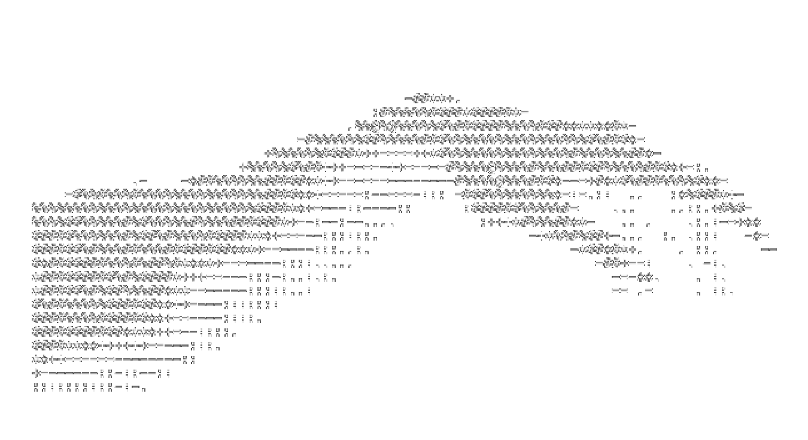
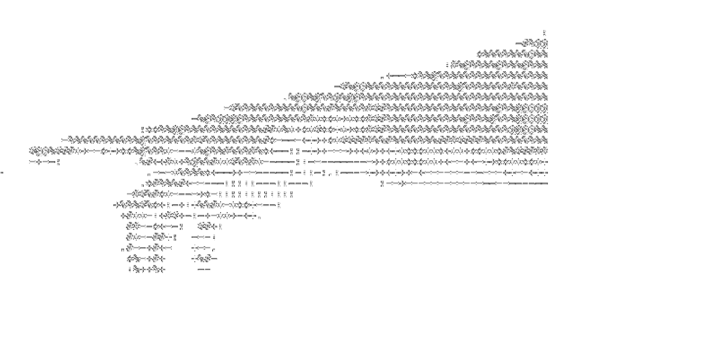
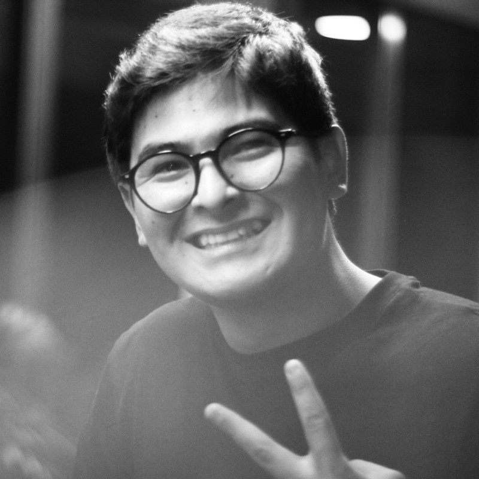
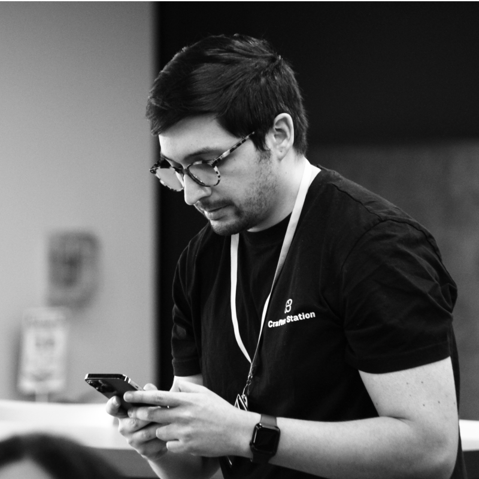
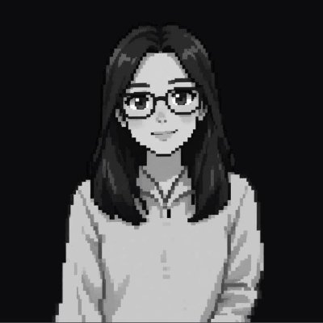
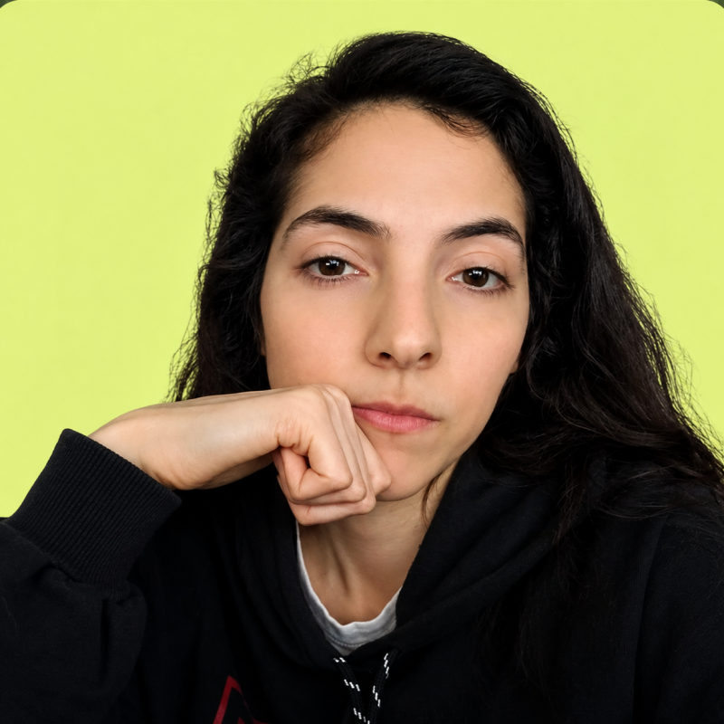
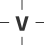

Construir soluciones tech por Venezuela.


Venezuela enfrenta una emergencia mayor tras dos fuertes terremotos el 24 de junio. Los equipos de rescate siguen buscando sobrevivientes mientras llega ayuda internacional y las comunidades afectadas enfrentan una crisis humanitaria en desarrollo.
24 de junio, 2026 · Venezuela
Un sismo de gran magnitud devastó regiones enteras: familias separadas, infraestructura colapsada, comunicaciones cortadas. La respuesta digital fue caótica —datos dispersos en docenas de plataformas, sin interoperabilidad, sin API, sin offline.
Elige un problema concreto. Reduce el alcance. Deja algo que otra persona pueda usar el lunes.
Ese día empezamos a publicar los proyectos. Puedes seguir avanzando después —el trabajo no se detiene— pero esa es la línea que ponemos para que cada equipo tenga una primera versión usable en manos de las personas.
Si tienes cualquier duda sobre el evento, escríbele directo a quienes lo están organizando.





La tecnología también puede seruna forma de solidaridad.
build4venezuela.com